Reclamaciones · Bobinas de Papel
Plataforma web corporativa para gestionar reclamaciones de calidad sobre bobinas y resmas de papel. Conecta React y Express con MySQL e IBM i (AS/400 DB2) mediante ODBC, con puente PHP de respaldo, y reúne valoración económica, evidencias, documentos y seguimiento del expediente.
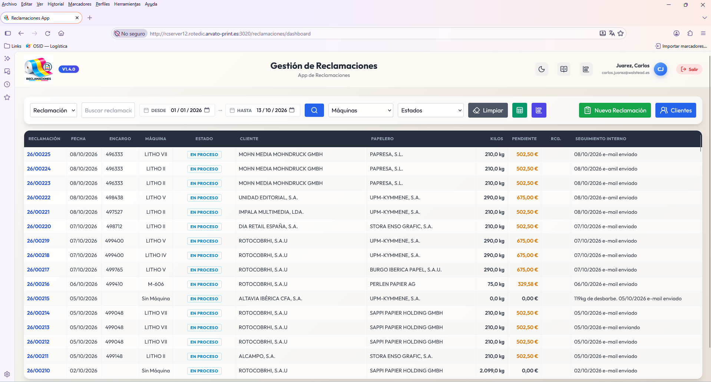
Interfaz Operativa del Sistema
Vista real de la aplicación en producción con datos operativos.
Ampliar interfaz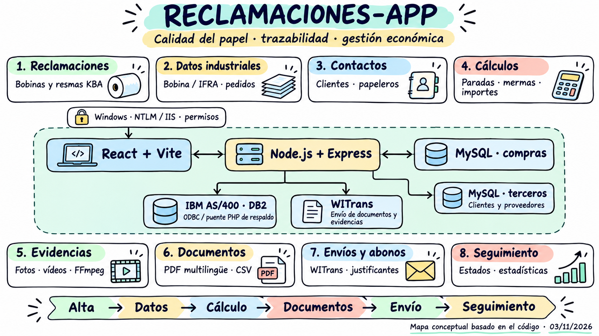
Arquitectura de la plataforma
Mapa visual de React, Express, MySQL, integración AS/400 y gestión documental con WITrans.
Ampliar esquema técnicoReclamaciones, de un vistazo
Explora la arquitectura y el recorrido del expediente: desde la identificación del papel hasta el seguimiento económico. Amplía cada lámina o despliega su diagrama de flujo.
Arquitectura de la plataforma

React y Express conectan los expedientes con MySQL, DB2 y WITrans.
Ver diagrama de flujo
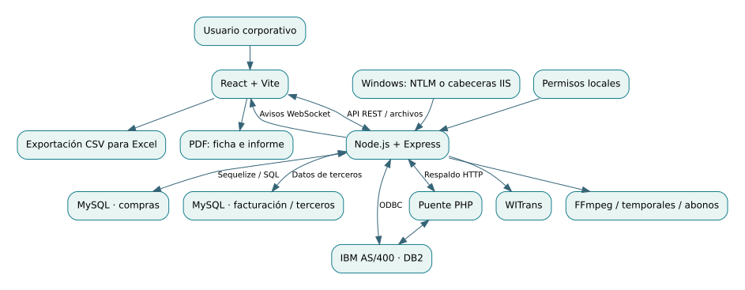
Relaciones lógicas entre componentes; no representa una topología física de servidores.
Descargar diagrama editable (Mermaid)De la incidencia al abono

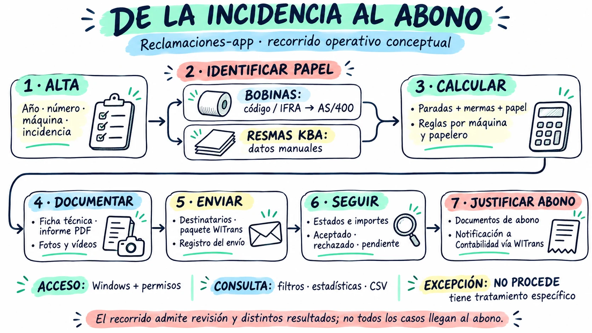
Ampliar láminaAlta, identificación del papel, valoración, documentación, envío y seguimiento.
Ver diagrama de flujo
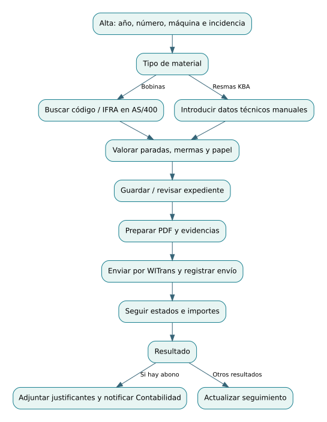
Recorrido orientativo: admite revisión y distintos resultados; no todos los casos llegan al abono.
Descargar diagrama editable (Mermaid)Cálculos y mermas

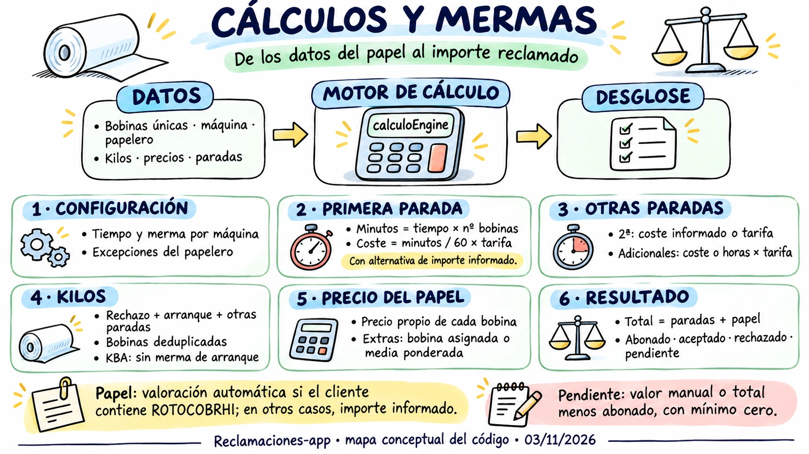
Ampliar láminaParadas, kilos de papel, reglas por máquina y papelero, e importes pendientes.
Ver diagrama de flujo
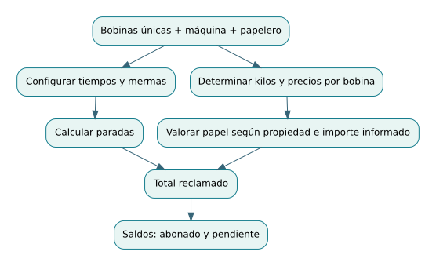
El diagrama sintetiza el motor de backend; existen cálculos adicionales en la interfaz.
Descargar diagrama editable (Mermaid)Integración con AS/400

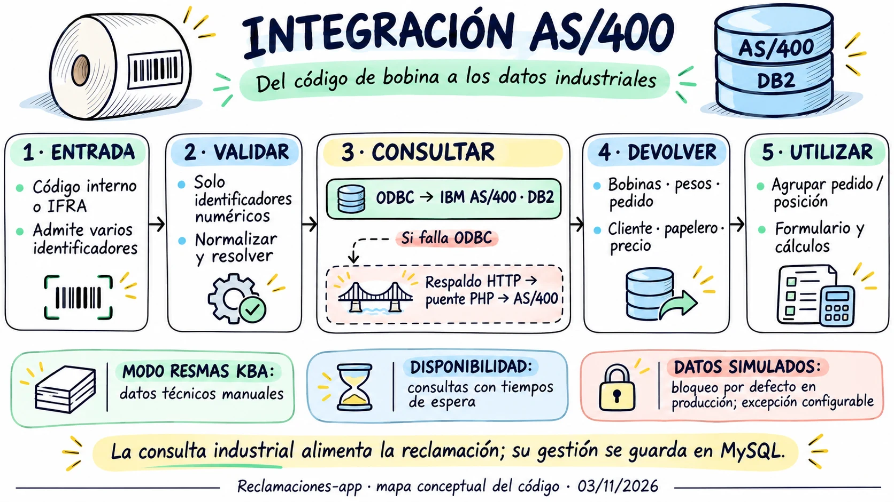
Ampliar láminaConsulta ODBC de bobinas e IFRA con puente PHP de respaldo ante fallos.
Ver diagrama de flujo
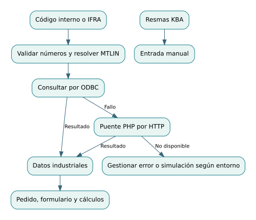
Una consulta ODBC sin resultados no activa por sí sola el respaldo PHP.
Descargar diagrama editable (Mermaid)Datos y contactos

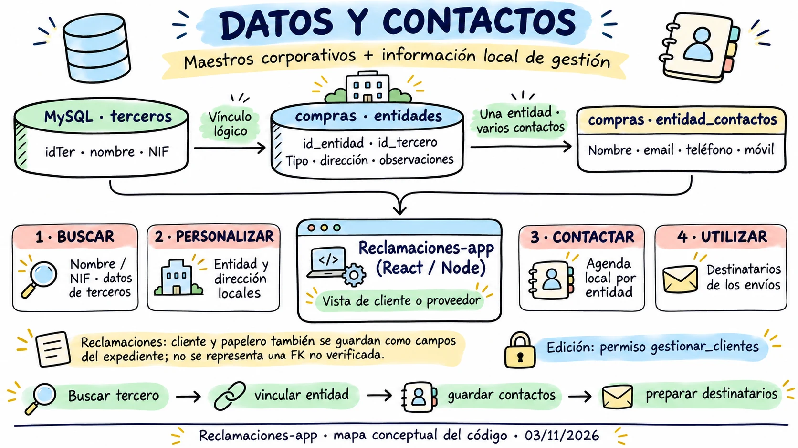
Ampliar láminaDatos maestros de terceros, entidades locales y contactos para los envíos.
Ver diagrama de flujo
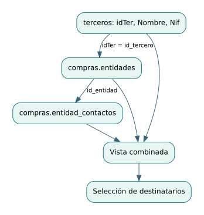
El cruce entre conexiones MySQL se realiza en la aplicación.
Descargar diagrama editable (Mermaid)Evidencias y WITrans

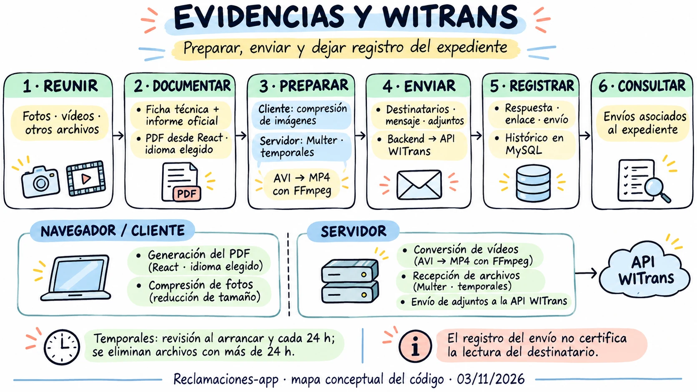
Ampliar láminaPDF, fotografías y vídeos reunidos en un paquete con registro de envío.
Ver diagrama de flujo
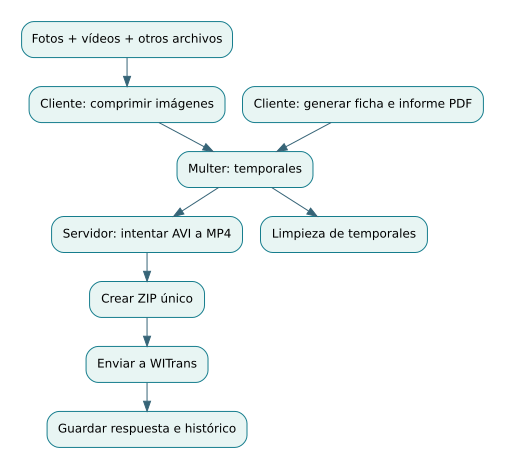
Si falla la conversión de vídeo, el envío puede continuar con el archivo original.
Descargar diagrama editable (Mermaid)Estados y abonos

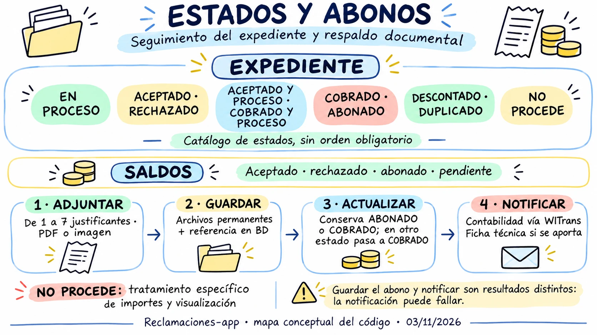
Ampliar láminaResultados del expediente, justificantes y notificación a Contabilidad.
Ver diagrama de flujo
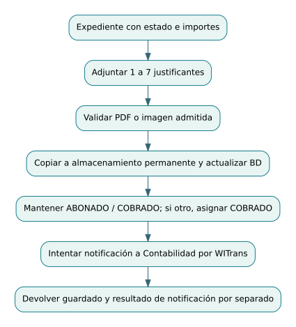
Guardar justificantes y notificar son resultados separados; adjuntar documentos no acredita un cobro bancario.
Descargar diagrama editable (Mermaid)Acceso y permisos

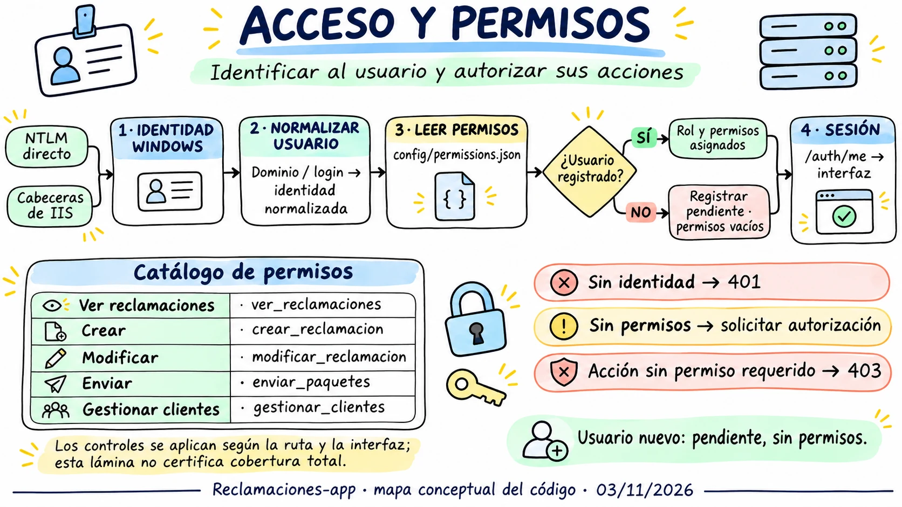
Ampliar láminaIdentidad Windows, autorización local y permisos por acción.
Ver diagrama de flujo
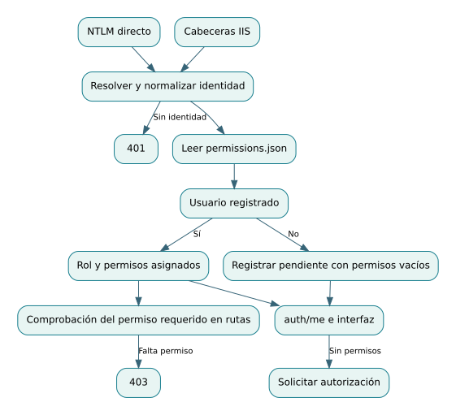
Los usuarios nuevos quedan pendientes de autorización; las acciones revisan permisos específicos.
Descargar diagrama editable (Mermaid)Documentación visual basada en la revisión del código del 3 de noviembre de 2026. Los diagramas representan relaciones y recorridos conceptuales.
Topología de Infraestructura, Conexiones & Servidores
cleanupService.js (>24h) y el sandbox seguro de abonos data/abonos/.api_bobina.php con socket persistente odbc_pconnect (<100ms) a AS/400 y base de datos relacional MySQL compras (reclamaciones, entidades, máquinas, envíos).BBM001F), pedidos de compra y albaranes de papel (ALB001F) para validación de pesos y proveedores.Módulos Funcionales Nucleares (Catálogo de Módulos)
Generación de código correlativo anual YY/NNNNN con selector modal de ejercicio contable, bloqueo readOnly en edición y sincronización multi-ejercicio.
Conector de latencia ultrabaja (<100ms) vía odbc_pconnect que consulta BBM001F y ALB001F sin overhead de apertura de sesión, autocompletando bobina, albarán y proveedor.
Cálculo en caliente de 1ª parada base, 2ª parada de 35 min con recargos por rotativa (700 a 1.300 €/h) y array serializado JSON para paradas 3ª..N.
Manejo desacoplado de papel continuo de rotativa frente a resmas precortadas en máquina plana KBA (cálculo por pliegos en cm, millares y recargo de corte/guillotinado).
Integración de normativas contra la deforestación: almacenamiento de Declaración de Diligencia Debida (eudr_dds) y estado de verificación ambiental.
Compresión de fotografías en cliente vía HTML5 Canvas y worker asíncrono con FFmpeg para convertir vídeos .avi industriales a .mp4 H.264/AAC (-85% peso).
Compilación en el navegador con @react-pdf/renderer de Ficha Técnica oficial y Carta de Reclamación con anexos periciales en ES, EN, FR, IT y DE.
Subida por streaming cifrado a la pasarela interna con Bearer Token, generación de enlace expirable, acuse de recibo y alerta automática por correo.
Custodia de facturas de abono en data/abonos/ con validación estricta path.resolve + path.basename y gestión del estado 'NO PROCEDE' (vaciado a 0).
Directorio relacional con múltiples direcciones JSON y exportación modular en streaming a libros Excel XLSX de 26 columnas con UTF-8 BOM.
Pipeline Operativo & Ciclo de Vida de Reclamación
Motor de Paradas de Rotativa & Cálculo Económico de Mermas
Cálculo directo de kilos defectuosos por precio/kg registrado en el albarán del ERP AS/400, o por millares de pliegos y recargo de corte en máquina plana.
Parada técnica inicial imputable al defecto del papel con tarifa estándar de preparación y arranque de la línea de producción.
Tarifa fija de 35 minutos calibrada por modelo: Litho IV/V (1.300 €/h), Litho II/VII (900 €/h) y M-606/Rotoman (700 €/h).
Soporte para múltiples paradas recurrentes en turnos continuos, acumuladas con motivo técnico, duración y coste horario específico.
Reglas Críticas de Seguridad, Hardening & Blindaje Forense
Autenticación transparente Windows integrada con resolución en permissions.json (admin, editor, compras, operador, pendiente).
Protección estricta en data/abonos/ forzando path.basename y validación con path.resolve para evitar fugas de ficheros en el SO.
Filtro estricto por lista blanca MIME, validación de cabeceras binarias y transcodificación aislada en workers de background.
Cumplimiento normativo europeo de deforestación y registro cronológico inmutable de aperturas, envíos y modificaciones periciales.
 React 18
React 18
 Node.js 18+
Node.js 18+
 Express (IISNode)
Express (IISNode)
 IBM AS/400 DB2
IBM AS/400 DB2
 ODBC pconnect
ODBC pconnect
 MySQL Compras
MySQL Compras
 FFmpeg Transcode
FFmpeg Transcode
 Pasarela WITrans
React-PDF (5 Idiomas)
Pasarela WITrans
React-PDF (5 Idiomas)
Aspectos Técnicos Clave:
- Integración AS/400 DB2: consulta de códigos de bobina e IFRA por ODBC, con puente PHP de respaldo ante fallos. Los datos industriales alimentan el formulario y los cálculos.
- Motor de Paradas Múltiples y Tarifas Escalonadas de Taller: Algoritmo de cálculo en caliente que liquida mermas de papel (continuo o resmas KBA) y computa penalizaciones horarias específicas por rotativa: Litho IV/V (1.300 €/h), Litho II/VII (900 €/h) y M-606/Rotoman (700 €/h).
- Hub Multimedia & Transcodificación Asíncrona FFmpeg: Optimización de imágenes en cliente con compresión Canvas y conversión automática de vídeos en formato
.avide cámaras de planta a.mp4(H.264/AAC), logrando reducciones del 75% al 90% en peso sin perder nitidez probatoria. - Emisión Documental Client-Side Multilingüe en 5 Idiomas: Generación instantánea en navegador mediante
@react-pdf/rendererde la Ficha Técnica pericial y la Carta Oficial de Reclamación con anexos fotográficos en español, inglés, francés, italiano y alemán. - Despacho Seguro WITrans & Blindaje Forense de Abonos: Integración vía API REST con la pasarela corporativa WITrans mediante tokens Bearer para transferencia cifrada de gigabytes periciales, sanitización canónica de rutas contra Path Traversal y estado auditado 'NO PROCEDE'.